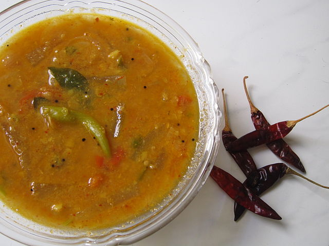

Sambhar

What is sambhar
Sambhar is a lentil-based vegetable stew/soup, cooked with pigeon pea and tamarind broth. It is popular in South Indian and Sri Lankan cuisines.
Ingredients to make Sambhar
For pressure cooking:
- ½ cup toor dal
- ½ tsp turmeric powder
- 2 cups water
Vegetables
- 10 drumstick pieces
- ¼ onion (cubed)
- ½ tomato (roughly chopped)
- 7 pieces brinjal / eggplant
- ½ carrot
- ½ potato
Other Ingredients:
- ½ lemon sized tamarind
- 1 tsp jaggery or sugar
- 2 green chilli
- salt to taste
- ½ tsp turmeric powder
- 2 tsp sambar powder
Tempering ingredients:
- 1 tbsp coconut oil / any cooking oil
- 1 tsp mustard seeds
- ¾ tsp urad dal
- few curry leaves
- pinch of hing
How to make sambhar?
Instructions:
- Firstly, in a pressure cooker add ½ cup of toor dal with 2 cups of water. also add pinch of turmeric. pressure cook it for 5 whistles.
- Meanwhile, in a small bowl take small half lemon sized tamarind and soak in water.
- Also, prepare and chop veggies like carrot, eggplant, drumstick, onions and tomatoes.
- Now, in a large kadai take the tamarind water.
- To that add 1 tsp of jaggery/sugar along with green chill, salt and turmeric powder.
- Furthermore, add all the chopped vegetables to same mixture.
- Meanwhile, once the dal is cooked mash it well.
- After 10 minutes, the vegetables should be cooked properly.
- Now add the mashed toor dal and bring it to boil.
- Add 2 tsp of sambar powder.
- Mix the sambar powder and bring it to boil.
- Prepare the tempering by heating urad dal, mustard seeds, hing, curry leaves and red chillies.
- Add the tempering to the freshly prepared sambar.
- Finally, sambar is ready.